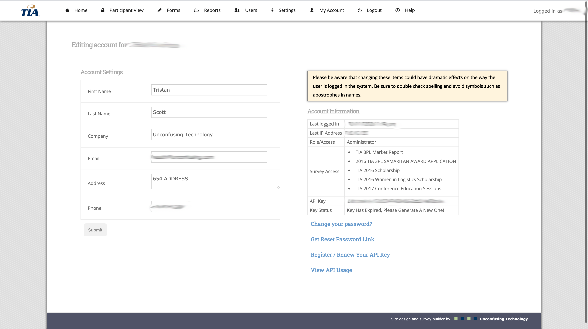

Invasive Species Detector was my submission for the 2020 AuburnHacks Hackathon. In less than 24 hours I programmed a web app that identifies invasive plants, animals, and insects in photographs. This project uses Python Flask as the web framework and IBM's Watson Visual Recognition for image object identification. I was able to train the AI on three invasive species for the demo (Burmese Pythons, Stink Bugs, and Purple Loosestrife). Give it a try at invasivespeciesde.tech.
Projects
Watson Pizza is an ongoing project being co-developed with fellow Software Engineering students as our senior design project. This project has us developing a virtual agent that can handle Domino's Pizza order sequences as if it was an employee. To accomplish this project we have combined several web technologies including IBM's Watson assistant, IBM text to speech, IBM speech to text, Cloud Foundry, CloudAnt Databases, and a self-built webhook that implements lexical analysis to process and build orders.
The TIA Survey REST API was a large Co-op project I was tasked with completing during my Cooperative work term. I was given full reign of design, development, documentatin, and deployment of this API. I had to learn and utilize RESTful practices and work with a legacy codebase and database. This API allows member companies of the Transportation Intermediaries Association to interface with a pre-exisitng TIA web application in their own applications.
MyApartment Website is a template based website builder developed by Unconfusing Technology. As part of my Cooperative work term I was tasked with maintaining and improving both the front and back ends of this application. MyApartment Website uses a complex backend to implement an easy to use website builder that pushes template updates to live websites at the click of a button.